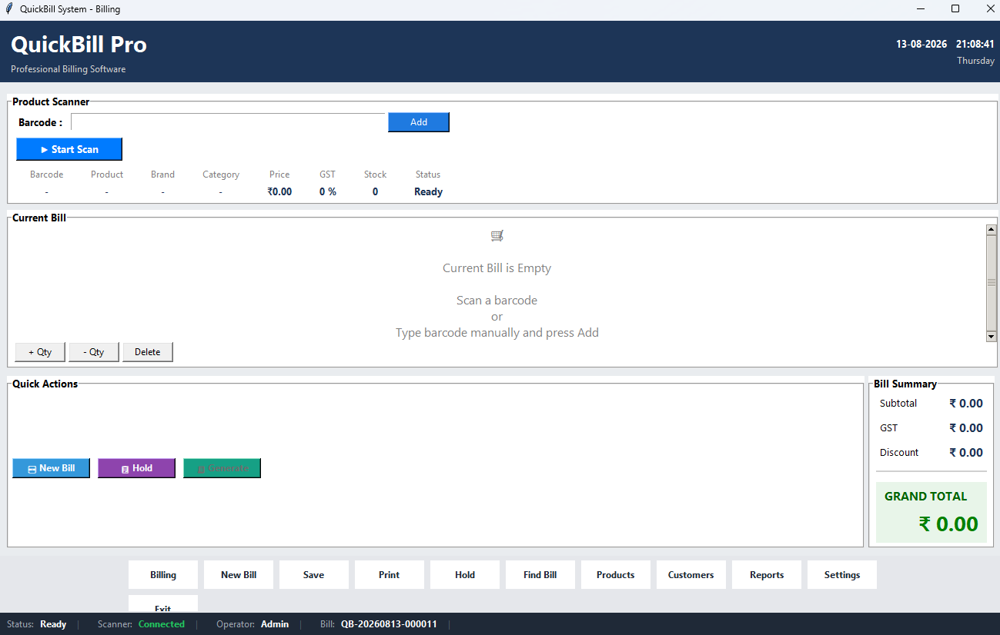

Billing & POS
Create bills using manual item entry or barcode-based item entry, manage quantities, remove items and calculate billing totals automatically.
PROFESSIONAL DESKTOP BILLING & POS
Complete billing software for retail shops and small businesses.
Create bills, manage products and inventory, process payments, generate invoices and keep billing history organized from one Windows desktop application.
Current stable release: QuickBill v3.0.0

QUICKBILL DESKTOP
QuickBill is built around a Windows desktop application that brings billing, products, inventory, payments, invoices and billing history together in one system.
Create bills using manual item entry or barcode-based item entry, manage quantities, remove items and calculate billing totals automatically.
Add, edit, delete and search products while maintaining product pricing, barcode identification and inventory information.
Support for USB scanners and camera-based scanning, together with continuous scanning, product lookup and duplicate barcode handling.
QuickBill supports Cash, UPI, Card and Credit payment workflows, including dynamic UPI QR generation for the current bill amount.
Generate printable PDF invoices in both A4 and 80 mm receipt formats, with support for billing reprints and automatic bill numbering.
View previous bills, search billing records, review transaction information and reprint invoices whenever required.
VERSION 3.0.0
QuickBill v3.0.0 consolidates the core billing, product management, invoice, payment, customer display and POS functionality into a stable desktop release.
A consistent desktop interface designed around everyday point-of-sale billing operations.
Cash, UPI, Card and Credit workflows with dynamic UPI QR payment support.
Real-time customer-facing billing information, payment state and UPI QR display through the companion application.
QUICKBILL ECOSYSTEM
QuickBill Desktop remains the core billing application and authoritative source of billing data. Companion applications provide additional POS functionality.
The core Windows billing and POS application. It manages products, inventory, cart state, bills, transactions, payments, customer information and invoice generation.
View repository →Companion Android barcode-scanning functionality designed to work with QuickBill Desktop.
View repository →Companion Android application providing a real-time customer-facing display for bill items, totals, payment information, UPI QR display and payment success state.
View repository →CORE FEATURES
QuickBill brings the essential tools for retail billing, product management, payments and invoicing into one Windows desktop application.
Create bills using manual or barcode-based item entry. Manage quantities, remove items, capture customer information and automatically calculate subtotal, tax, discounts and final bill totals.
Manage the product catalogue from QuickBill. Add, edit, delete and search products while maintaining barcode, pricing and inventory information.
Add products quickly using USB barcode scanners, camera-based scanning and the QuickBill Barcode Scanner companion application.
Handle Cash, UPI, Card and Credit payment workflows. QuickBill also supports dynamic UPI QR generation using the current bill amount and payment details.
Generate professional PDF invoices in A4 and 80 mm formats, with automatic bill numbering and support for printing and reprinting.
Review previous bills and transaction information, search billing records and reprint invoices when required.
Temporarily hold an active billing session and resume it later without losing the current bill.
Synchronize billing and payment information with the QuickBill Customer Display companion application, including live totals, payment information and UPI QR display.
TECHNICAL INFORMATION
QuickBill is a Windows desktop application developed with Python and distributed as a desktop billing system.
CURRENT STABLE RELEASE
The first stable release of QuickBill, bringing together the core billing, product management, payment, invoice and customer display functionality.